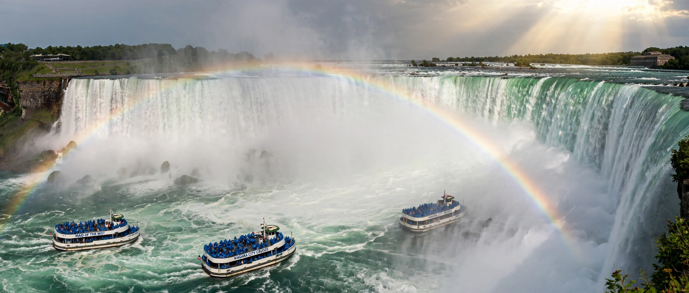

[Image placeholder: Horseshoe Falls at Niagara, on the Ontario–New York border]| Country | Canada |
|---|---|
| Capital | Toronto (also Canada's largest city) |
| Population | About 16 million — Canada's most populous province |
| Area | About 1.08 million km² |
| Premier city | Toronto; federal capital Ottawa in the east |
**Ontario** is the southernmost and most populous province of Canada, home to about 40% of Canadians. It contains both the national capital, Ottawa, and Canada's largest city and financial centre, Toronto. Ontario is bordered by Hudson Bay to the north, Quebec to the east, Manitoba to the west, and the Great Lakes and the United States to the south.
The name derives from Lake Ontario, from an Iroquoian word for 'great lake' or 'beautiful water'. Ontario's economy is Canada's largest — manufacturing (especially autos along the Highway 401 corridor), finance, technology ('Toronto–Waterloo corridor'), mining in the Canadian Shield north, and agriculture in the southern peninsula. Niagara Falls, on its US border, is its emblematic natural wonder — the boundary runs through the Great Lakes, where the province's population is concentrated.
Southern Ontario's fertile lowlands and Golden Horseshoe urban belt contrast with the vast, thinly populated Shield and Hudson Bay Lowlands of Northern Ontario. Ontario has about 250,000 lakes — roughly a fifth of the world's fresh surface water sits within or on its borders.
French explorers and fur traders preceded British rule after 1763; Loyalist refugees from the American Revolution populated Upper Canada (1791), which became Canada West and then Ontario at Confederation in 1867. Disputes with Manitoba over the northwestern boundary lasted into the twentieth century.